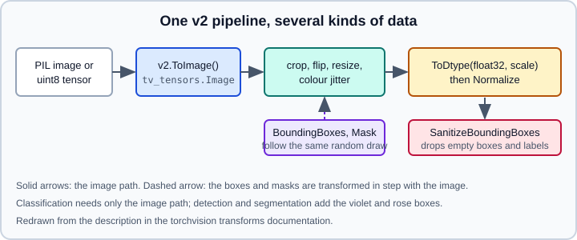

torchvision: Transforms v2, Models & Weights
|
This content was generated with the assistance of AI and should be verified against the official documentation before being relied on in production. |
torchvision is the computer-vision companion library of PyTorch. It ships four things: image and video transforms (data augmentation and preprocessing), a zoo of models with pre-trained weights (classification, detection, segmentation, video, optical flow), a collection of datasets, and low-level operators such as non-maximum suppression. This page covers the current API as documented for the stable release and explains what changed compared with older books and tutorials. It assumes you know tensors and the Dataset/DataLoader pair; if not, read Tensors and Datasets & DataLoader first. The theory of convolutional networks is in Convolutional Neural Networks, and reuse of pre-trained weights is in Transfer Learning & Fine-Tuning.
Examples target Python 3.13 and PyTorch 2.15. torchvision 0.29.2 (released 2026-10-28, requiring torch>=2.14.0) is the release that pip installs next to PyTorch 2.15; the torch to torchvision pairing table in the project README stopped at PyTorch 2.13 (torchvision 0.28) in October 2026, so take the pairing from pip and the PyTorch install selector. The examples were run on Python 3.13 with PyTorch 2.15 and torchvision 0.29.2 (CPU) on 2026-10-31; the ImageFolder and CIFAR-10 examples ran on small synthetic stand-ins for the image folders and the CIFAR-10 download, and photo.jpg was a generated image.
Installation and version pairing
torchvision is released in lockstep with PyTorch, and each torchvision minor version works with one torch version (or a small range). Installing both in one command lets the resolver pick a matching pair:
python -m venv .venv
source .venv/bin/activate
pip install torch torchvision
python -c "import torch, torchvision; print(torch.__version__, torchvision.__version__)"For a specific CUDA, ROCm or CPU build use the selector on that page, which prints a command with the right --index-url; see Installation & Versions. Installing a mismatched pair is the classic cause of errors such as RuntimeError: operator torchvision::nms does not exist, because the compiled operators are built against one torch version.
Transforms v2
The transforms live in torchvision.transforms.v2. They were introduced in torchvision 0.15 and the documentation states that new features and improvements are only considered for v2. The older torchvision.transforms (v1) is still documented, and moving to v2 is usually an import change, although outputs can differ slightly. Use v2 in all new code.
What v2 adds over v1:
-
Transforms work on images, bounding boxes, masks, keypoints and videos, and apply the same random parameters to all of them.
-
They accept arbitrary input structures (a tuple, a dict, a custom sample) and transform every supported entry.
-
They run on tensors on CPU or CUDA, with any number of leading batch dimensions.
-
CutMix and MixUp are available.
The basic image pipeline
An image pipeline has a fixed shape: convert to a tensor image, augment (training only), convert to float with scaling, normalize.
import torch
from torchvision.transforms import v2
train_tf = v2.Compose([
v2.ToImage(), # PIL / ndarray -> tv_tensors.Image (uint8, no scaling)
v2.RandomResizedCrop(224, antialias=True),
v2.RandomHorizontalFlip(p=0.5),
v2.ToDtype(torch.float32, scale=True), # uint8 [0, 255] -> float32 [0, 1]
v2.Normalize(mean=[0.485, 0.456, 0.406],
std=[0.229, 0.224, 0.225]),
])
eval_tf = v2.Compose([
v2.ToImage(),
v2.Resize(256, antialias=True),
v2.CenterCrop(224),
v2.ToDtype(torch.float32, scale=True),
v2.Normalize(mean=[0.485, 0.456, 0.406],
std=[0.229, 0.224, 0.225]),
])Points that matter:
-
v2.ToImage()converts a PIL image, NumPy array or tensor into atv_tensors.Imagewithout changing the values, so a uint8 image stays in [0, 255]. -
v2.ToDtype(torch.float32, scale=True)converts the dtype and rescales the range together: float images are expected in [0, 1] and uint8 images in [0, 255]. Forgettingscale=Trueleaves float values in [0, 255], andNormalizethen produces values far outside the range the pre-trained model saw. -
v2.ToTensor()andv2.ConvertImageDtypeare deprecated in v2. The two-step replacement isToImage()followed byToDtype(torch.float32, scale=True). -
Pass
antialias=TruetoResizeandRandomResizedCrop(the examples in the documentation do). For tensors the default behaviour has changed across releases, and explicit is safer; PIL images are always antialiased. -
The mean and standard deviation above are the ImageNet statistics used by most torchvision classification weights. Use
weights.transforms()(below) for a pre-trained model instead of copying numbers. -
For speed, the documentation recommends tensors rather than PIL where possible, uint8 for resizing, bilinear or bicubic interpolation, and
DataLoader(num_workers > 0).torch.compilecan help individual transforms such asNormalize;ResizeandRandomResizedCropprefer channels-last input and do not currently benefit.
A transform pipeline plugs into a dataset through the transform= argument, so it runs in the DataLoader workers:
from torchvision.datasets import ImageFolder
from torch.utils.data import DataLoader
train_ds = ImageFolder("data/train", transform=train_tf)
loader = DataLoader(train_ds, batch_size=64, shuffle=True,
num_workers=4, pin_memory=True)Augmentation catalogue
Besides the geometric and photometric basics (RandomCrop, RandomRotation, RandomAffine, ColorJitter, GaussianBlur, RandomErasing), v2 includes automatic augmentation policies: v2.AutoAugment, v2.RandAugment, v2.TrivialAugmentWide and v2.AugMix. They operate on uint8 images, so place them before ToDtype. TrivialAugmentWide has no hyperparameters to tune and is a strong default for classification.
CutMix and MixUp mix pairs of samples, so they must run on a batch, not in the per-image dataset transform. The standard way is a custom collate_fn:
from torch.utils.data import DataLoader, default_collate
from torchvision.transforms import v2
NUM_CLASSES = 10
cutmix = v2.CutMix(num_classes=NUM_CLASSES)
mixup = v2.MixUp(num_classes=NUM_CLASSES)
cutmix_or_mixup = v2.RandomChoice([cutmix, mixup])
def collate_fn(batch):
return cutmix_or_mixup(*default_collate(batch))
loader = DataLoader(train_ds, batch_size=64, shuffle=True,
collate_fn=collate_fn)The labels returned by these transforms are soft one-hot vectors of shape (N, num_classes), so the loss must accept class probabilities. nn.CrossEntropyLoss does (see Loss Functions); accuracy computed with argmax against hard labels needs adapting.
tv_tensors: images, boxes and masks that stay in sync
For detection and segmentation the pipeline must change the image and its annotations together. torchvision does this with tv_tensors, torch.Tensor subclasses that tell a transform what kind of data it is looking at: tv_tensors.Image, tv_tensors.Video, tv_tensors.BoundingBoxes, tv_tensors.Mask and tv_tensors.KeyPoints. A plain tensor in the input is treated as an image only if no tv_tensor image is present, so wrap everything explicitly.

import torch
from torchvision import tv_tensors
from torchvision.transforms import v2
img = tv_tensors.Image(torch.randint(0, 256, (3, 480, 640), dtype=torch.uint8))
boxes = tv_tensors.BoundingBoxes(
[[100, 100, 300, 260], [400, 50, 630, 200]], # XYXY, absolute pixels
format="XYXY",
canvas_size=img.shape[-2:], # (height, width)
)
labels = torch.tensor([1, 2])
det_tf = v2.Compose([
v2.RandomPhotometricDistort(p=1),
v2.RandomZoomOut(fill={tv_tensors.Image: (123, 117, 104), "others": 0}),
v2.RandomIoUCrop(),
v2.RandomHorizontalFlip(p=0.5),
v2.SanitizeBoundingBoxes(), # drop degenerate boxes and their labels
v2.ToDtype(torch.float32, scale=True),
v2.ToPureTensor(), # back to plain tensors for the model
])
out_img, out_target = det_tf(img, {"boxes": boxes, "labels": labels})
print(out_img.shape, out_target["boxes"].shape, out_target["labels"])Source: https://docs.pytorch.org/vision/stable/transforms.html and https://docs.pytorch.org/vision/stable/auto_examples/transforms/plot_transforms_getting_started.html
Details:
-
A
BoundingBoxesobject carries itsformat(XYXY,XYWHorCXCYWH) andcanvas_size, which the transforms need to clamp and flip correctly.v2.ConvertBoundingBoxFormatandv2.ClampBoundingBoxesare the related helpers. -
v2.SanitizeBoundingBoxesremoves boxes with zero or negative size after cropping and also removes the labels (and masks) with the same indices. It finds the labels in the sample through itslabels_getter; with a dict containing a"labels"key it works out of the box, otherwise pass a callable. -
v2.ToPureTensor()converts tv_tensors back to ordinary tensors. The torchvision detection models do not need tv_tensors, and the finetuning tutorial usesToPureTensoras the last step. -
A hand-built sample can be a tuple or dict. Dict keys do not matter; the types decide how each entry is treated, and entries that are plain tensors or unknown types pass through untouched.
TorchScript caveat: calling torch.jit.script() on a v2 class transform gives its v1 equivalent, which may produce slightly different results; script the functionals instead, and only for pure tensors. For composition inside a scripted module use torch.nn.Sequential, not Compose. TorchScript itself is deprecated, see Legacy APIs & Migration.
Models and pre-trained weights
All model builders live in torchvision.models (and torchvision.models.detection, .segmentation, .video, .optical_flow, .quantization). Since the multi-weight API (torchvision 0.13) every builder takes a weights argument that selects a weights enum member, a string, or None:
import torch
from torchvision.models import resnet50, ResNet50_Weights
weights = ResNet50_Weights.DEFAULT # an alias for the best available weights
model = resnet50(weights=weights).eval()
preprocess = weights.transforms() # the exact inference transforms of these weights
img = torch.randint(0, 256, (3, 480, 640), dtype=torch.uint8) # stand-in for a real image
batch = preprocess(img).unsqueeze(0)
with torch.inference_mode():
prob = model(batch).squeeze(0).softmax(0)
class_id = prob.argmax().item()
print(weights.meta["categories"][class_id], float(prob[class_id]))A random uint8 tensor stands in for a real image to keep the example self-contained; load real files with PIL or TorchCodec (see the section on torchvision.io below).
Key facts from the models documentation:
-
ResNet50_Weights.DEFAULTcurrently aliasesIMAGENET1K_V2, and "best available" may change between versions.IMAGENET1K_V1is the original, lower-accuracy checkpoint. For reproducible work pin the explicit member, for exampleResNet50_Weights.IMAGENET1K_V2. -
Each weights enum bundles its inference transforms (
weights.transforms(): resize, crop, rescale, normalize with the right interpolation) and metadata (weights.meta: categories, input size, parameter count, recipe, accuracy). The documentation warns against skipping the preprocessing: wrong resize or normalization lowers accuracy or gives wrong outputs. -
Weights files are downloaded on first use to the PyTorch hub cache. The directory is set with the
TORCH_HOMEenvironment variable (default under~/.cache/torch), seetorch.hub.load_state_dict_from_urlfor the details. -
Pre-trained weights can carry their own licenses or dataset-derived terms; confirm you may use them.
-
weights=Nonegives random initialization, the right choice when training from scratch.
Finding and building models by name
Four public helpers make the zoo scriptable (torchvision 0.14 and later): list_models, get_model, get_model_weights and get_weight.
from torchvision.models import list_models, get_model, get_model_weights, get_weight
print(list_models()[:5]) # every registered builder name
print(list_models(include="*resnet*")[:5]) # glob filters
model = get_model("mobilenet_v3_large", weights="DEFAULT")
Weights = get_model_weights("mobilenet_v3_large")
print([w.name for w in Weights]) # the available checkpoints
same = get_weight("MobileNet_V3_Large_Weights.IMAGENET1K_V2")This is how configuration-driven code (a YAML file with model: resnet50) avoids a hand-written if/elif ladder.
The old pretrained flag
Older books and tutorials write models.resnet18(pretrained=True). That boolean was deprecated in torchvision 0.13, when the weights API arrived, but it has not been removed: torchvision 0.29.2 still accepts it and emits a UserWarning ("The parameter 'pretrained' is deprecated since 0.13 and may be removed in the future, please use 'weights' instead."). Do not rely on it in new code. The replacement is weights=...:
| Old (until about 2022) | Current (torchvision 0.29) |
|---|---|
|
|
|
|
|
|
copying ImageNet mean/std by hand |
|
The model zoo
The models page groups the builders by task. The classification family runs from AlexNet and VGG through ResNet, ResNeXt, Wide ResNet, DenseNet, Inception, MobileNet v2/v3, EfficientNet, RegNet, ConvNeXt, Vision Transformer, Swin and MaxViT, plus INT8 quantized variants. Other tasks:
-
Semantic segmentation: DeepLabV3, FCN and LRASPP.
-
Object detection, instance segmentation and keypoint detection: Faster R-CNN, RetinaNet, SSD, FCOS, Mask R-CNN, Keypoint R-CNN.
-
Video classification: MViT, video ResNet, S3D and Video Swin.
-
Optical flow: RAFT.
The detection, segmentation and video families are marked beta in the documentation, so their APIs can still change. Detection models expect a list of 3D float tensors in [0, 1] (they do their own resizing and normalization inside GeneralizedRCNNTransform) and return a list of dicts with boxes, labels and scores. In training mode they take a list of target dicts and return a loss dictionary:
import torch
from torchvision.models.detection import fasterrcnn_resnet50_fpn, FasterRCNN_ResNet50_FPN_Weights
weights = FasterRCNN_ResNet50_FPN_Weights.DEFAULT
model = fasterrcnn_resnet50_fpn(weights=weights, box_score_thresh=0.7).eval()
images = [torch.rand(3, 480, 640)] # float in [0, 1], one tensor per image
with torch.inference_mode():
detections = model(images)
d = detections[0]
labels = [weights.meta["categories"][i] for i in d["labels"]]
print(d["boxes"].shape, labels)Replacing the detection head for a custom number of classes is shown in Transfer Learning & Fine-Tuning.
Extracting intermediate features
To use a backbone as a feature extractor (for example to feed a feature pyramid) without writing a subclass, torchvision.models.feature_extraction rewrites the model with torch.fx and returns the requested intermediate outputs as a dictionary:
import torch
from torchvision.models import resnet50
from torchvision.models.feature_extraction import create_feature_extractor, get_graph_node_names
model = resnet50()
train_nodes, eval_nodes = get_graph_node_names(model)
print(eval_nodes[:5], "...")
extractor = create_feature_extractor(model, return_nodes={"layer3": "c4", "layer4": "c5"})
out = extractor(torch.randn(1, 3, 224, 224))
print({k: v.shape for k, v in out.items()})Caveats from the documentation: control flow that depends on training mode makes train_nodes and eval_nodes differ, a truncated name such as layer4 selects the last node under that module in execution order (not always the output you want), and the node names follow a dotted module path with a _{int} suffix for repeated operations. For a model you can edit, replacing model.fc with nn.Identity() is simpler for the last-layer embedding.
Datasets
torchvision.datasets provides ready-made Dataset classes: image classification (MNIST, Fashion-MNIST, CIFAR-10/100, ImageNet with manually downloaded archives, Flowers102, Food101, and many more), detection and segmentation (COCO, VOC, Cityscapes), video and optical flow sets, and generic loaders ImageFolder, DatasetFolder and VisionDataset for your own data. Typical use:
import torch
from torchvision import datasets
from torchvision.transforms import v2
tf = v2.Compose([v2.ToImage(), v2.ToDtype(torch.float32, scale=True)])
train = datasets.CIFAR10(root="data", train=True, download=True, transform=tf)
print(len(train), train.classes[:3])
img, label = train[0]Practical points:
-
download=Truefetches the files intorootonce; later runs reuse them. In sandboxed or offline environments download once and copy the folder. -
ImageFolderexpectsroot/class_name/xxx.jpg; class indices follow the sorted folder names, andds.class_to_idxshows the mapping. -
Some datasets (ImageNet, Cityscapes) cannot be downloaded automatically for licensing reasons and need a manual archive.
-
The built-in detection datasets can be wrapped with
torchvision.datasets.wrap_dataset_for_transforms_v2so that targets come out astv_tensors, ready for v2 pipelines.
Operators
torchvision.ops contains operators that detection and segmentation models need and that are useful on their own: nms and batched_nms (non-maximum suppression), box_iou, generalized_box_iou, box_convert, roi_align, roi_pool, deform_conv2d, sigmoid_focal_loss, FeaturePyramidNetwork, plus layers such as Conv2dNormActivation, MLP, StochasticDepth and SqueezeExcitation.
import torch
from torchvision.ops import nms, box_iou
boxes = torch.tensor([[0., 0., 100., 100.], [10., 10., 110., 110.], [200., 200., 300., 300.]])
scores = torch.tensor([0.9, 0.8, 0.7])
keep = nms(boxes, scores, iou_threshold=0.5)
print(keep) # indices of the boxes that survive
print(box_iou(boxes, boxes))Reading images and video: torchvision.io is deprecated
The torchvision.io page is headed "[DEPRECATED] Decoding and Encoding images", and its warning says the image capabilities are deprecated since torchvision 0.29 in favour of TorchCodec, whose decoders and encoders are described as more complete (from TorchCodec 0.16). The deprecated list on that page includes decode_image, decode_jpeg, decode_png, decode_webp, decode_avif, decode_heic, decode_gif, ImageReadMode, read_image, encode_jpeg, write_jpeg, encode_png, write_png, read_file and write_file. No removal version is given. For video and audio the page also points to TorchCodec; whether the video helpers such as read_video share the same status is not stated on that page, so check the release notes before relying on them. Read more in torchaudio (Maintenance) & TorchCodec. The migration guide is at https://meta-pytorch.org/torchcodec/0.16/generated_examples/migration/torchvision_migration.html.
Code that only needs files as tensors can keep using PIL until it migrates:
import torch
from PIL import Image
from torchvision.transforms import v2
pil = Image.open("photo.jpg").convert("RGB")
x = v2.Compose([v2.ToImage(), v2.ToDtype(torch.float32, scale=True)])(pil)Common pitfalls
-
Wrong value range. Pre-trained classification models expect float input normalized with the ImageNet statistics; use
weights.transforms(). -
Augmenting validation data. Keep random transforms in the training pipeline only.
-
Mismatched torch and torchvision. Install them together and re-check after upgrading one.
-
model.eval()forgotten. Batch norm and dropout then behave as in training. See The Training Loop & Evaluation. -
Detection input format. Detection models take a list of tensors, not a stacked batch, and labels start at 1 because 0 is the background class.
-
Soft labels from CutMix or MixUp break code that assumes integer targets.
-
Using v1 transforms with boxes. v1 does not transform boxes or masks; use v2 with tv_tensors.